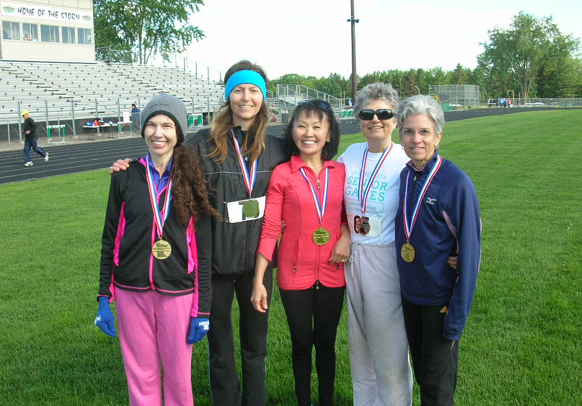
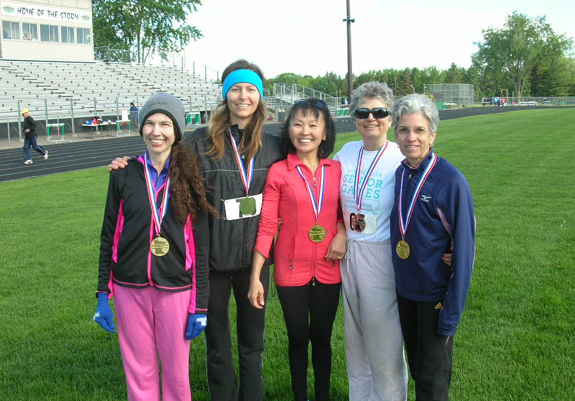

|
Learn to Race Walk!A 1-hour introduction to race walking - Details. Offered once each month, April-September on the second Monday of the month. 6pm-7pm at Como Lake - meet at the Black Bear statue. Cost: $5
Twin Cities Race Walkers is a club that promotes race walking in and around the twin cities of Minneapolis and Saint Paul in Minnesota. We each use race walking for our own goals, including competition, challenge, exercise, stress relief and weight loss.
Twin Cities Race Walkers support and organize judged race walking events in Minnesota. See the Events section for a current list of judged race walks that we are aware of in Minnesota.
Twin Cities Race Walkers is a USATF registered club. Membership in USATF is encouraged, but not required. USATF events require each competitor to be a USATF member.
Twin Cities Race Walkers encourages race walkers to participate in both judged and unjudged race walk events. We hope each walker will follow the rules of race walking to the best of their ability, regardless of whether there are race walk judges or not. When competing in unjudged events, it is important to be an ambassador for race walking. Keep smiling! Understand that you are competing against yourself - not against someone with a less rigorous interpretation of the rules of race walking. Be friendly. We want to attract new people to our sport!
Twin Cities Race Walkers promotes race walking year round.
For more information, e-mail
a member of Twin Cities Race Walkers
|
|
Copyright © 2013 by Twin Cities Race Walkers. All Rights Reserved Contact Webmaster if you have any issues or problems with this web site. |

 
